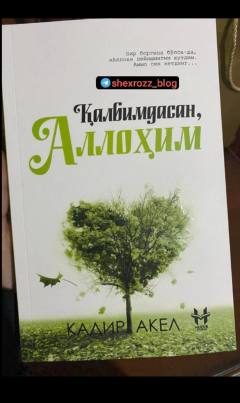

QAAllohga bo'lgan imon va ruhiy izlanish haqidagi ta'sirli roman.
Bu kitob turk yozuvchisi Kadir Akelning romani bo'lib, Farrux Nurmuhammedov tomonidan o'zbek tiliga tarjima qilingan va Huzur nashriyoti tomonidan 2024-yilda chop etilgan. Asar insonning Allohga bo'lgan ichki munosabati, imon va ruhiy izlanish mavzularini qamrab oladi. Muqovadagi 'Bir boringda bo'lsa-da, Alloh deyishingni kutdim. Ammo sen ketding...' so'zlari kitobning hissiy va ma'naviy yo'nalishini aks ettiradi.